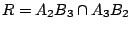
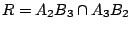
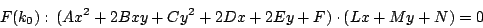

| |
【例一】：圓錐截線方程的矩陣表達式：在 中我們用到以矩陣來表達圓錐截線的方程式
若引入矩陣記號
則 Γ 的方程可簡潔地重新寫成下面模式：
其中 表示把矩陣的行列互相轉置
(transpose)，這個運算滿足下述簡單公式：
設 A, B 為適當大小的矩陣，則
【例二】：圓錐截線切線方程：令
為一圓錐截線，P1(x1,y1)
為 Γ 上任意的一點。在初等解析幾何中我們熟知過 P1
點的切線方程可以寫成
[ 圖 8-28 ]
這個公式的証明一般來說需要用到較為繁複的驗算。現在我們嘗試改用矩陣表達式和矩陣運算，把其驗算過程大大的簡化如下：
証明：不妨假設 Γ 是非蛻化的情況。若改用矩陣表達式，則
Γ 和 L1 可以分別寫成
其中
。若 Γ 與 L1 只交于 P1 這一點，則 L1 即為 Γ 在 P1
點的切線；假若不然，即 Γ 與 L1 至少交于 P1 和 P2 兩點：
首先，由所設 P1, P2 在 Γ 之上，即有
再者，我們也假設了 P2 在 L1 之上，即
 。 。
現于直線 L1=P1P2 上任取一點 P，則可選取適當的實數 λ
使得
。考慮 P 點的矩陣表達式：
，則有
所以 P 點也同時在 Γ 之上，亦即 Γ 已包含整條直線
L1，這自然是和 Γ 是非蛻化的假設互相矛盾。由此可見，Γ
與 L1 只可能交于 P1 這一點，亦即 L1 乃是 Γ 在 P1
的切線。
【例三】：當 時，已知
乃是
Γ 在 P1 的切線；但若 P1 不在 Γ
之上（如 [圖 8-29] 所示）時，L1 應該代表著什麼呢？
[ 圖 8-29 ]
[解答] L1 乃是由 P1 到 Γ 的兩條切線
L2, L3 的切點 P2, P3 所定的那條直線，如 [圖 8-30] 所示。
[ 圖 8-30 ]
証明：由前面的結果已知 L2 和 L3 的方程分別是
再者，由于兩者都過 P1(x1,y1) 點，即
經轉置 (transpose) 後即有
這就是說 P2, P3 在
之上。
【例四】：其實 [圖 8-29] 並不是
 的唯一情況，我們還須考慮如 [圖 8-31] 的情況，即 P1(x1,y1) 在 Γ 之內： 的唯一情況，我們還須考慮如 [圖 8-31] 的情況，即 P1(x1,y1) 在 Γ 之內：
[ 圖 8-31 ]
[解答] L1 乃是由過 P1 點的弦（如 [圖 8-32] 所示的
L2, L3 等），其兩端點切線的交點（如 P2, P3 等）所組成的點集。
[ 圖 8-32 ]
証明：由前面的討論已知：
由于 L2, L3 都是過 P1 點的弦，即
亦即
及
。所以 P2, P3 皆在 L1 之上。
[註]：由上面的例子我們可以看出 P 和 L 的密切（對偶）關係：給出 P 點，我們可以如前述例子般構作對應的 L；反之，給出直線 L，我們也可以把上面的程序倒過來構作 P
。在射影幾何中，P 與 L 分別稱為「極 (pole)」與「極線 (polar)」。
【例五】：Pascal 定理的純代數証明：在 中，我們運用了幾何透視對應方法來証明 Pascal 定理，即在一個圓錐截線 Γ 上任取六點
{A1,A2,A3; B1,B2,B3}，如 [圖 8-11] 所示，令
 , ,
 ,
，則恆有 {P,Q,R} 三點共線。 ,
，則恆有 {P,Q,R} 三點共線。
[ 圖 8-11 ]
現在我們改用純代數的方法來再次証明這個定理。這樣做的好處一來是反映出代數理論在幾何學上的不平凡應用；二來這種做法亦提供了一種途徑來研究高維、高次的代數曲線。設
令
，則易見對于任給的實數 k，A1, A2, A3, B1, B2, B3
這六點必然在三次曲線 F(k) 之上，而且 F(k) 也包含了 P, Q, R 這三點。不妨假設 Γ 為非蛻化圓錐截線。現于 Γ 上取第七點 S
（但不在已給的六點組
{A1,A2,A3; B1,B2,B3} 之內），然後選取適當的 k=k0 使得 S
同時也在 F(k0) 之上，亦即 Γ 與 F(k0) 相交于至少七點：
[ 圖 8-33 ]
因為 Γ 是一個非蛻化的二次曲線，F(k0) 是一個三次曲線，一般來說它們最多只有六個交點，除非 Γ 本身就是 F(k0) 的一個因式。由于我們的構作使它們兩者至少有七個交點，因此 Γ
必然可以整除 F(k0)，即

顯然 P, Q, R 均不在 Γ 之上，所以它們必然全都在直線 Lx+My+N=0
之上，Pascal 定理証畢。
當 k 由 k=0 漸漸趨向 k=k0，F(k) 的變化就如 [圖 8-34] 所示：
[ 圖 8-34 ]
|
|
|